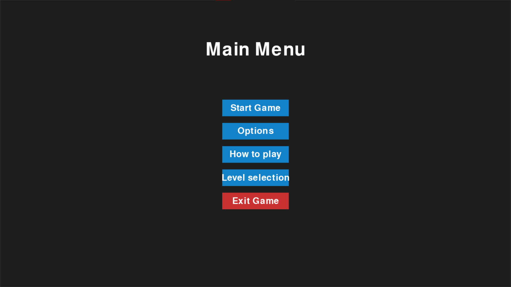

Die Roboter haben 3 Leben, man kann andere Roboter abschießen und abgeschossen werden und verliert Leben.
Beim Schießen hat man eine Powerbar. Man kann nur schießen solagne man noch Power hat und sie läd sich automatisch wieder auf.
Die Leben werden für jeden Roboter angezeigt und wenn ein Roboter keine Leben mehr hat scheidet er aus.
Die anderen Roboter werden programmiert, dass sie sich gegenseitig und den Spieler angreifen.
Verschiedene Effekte für die verschiedenen Bereiche. Bei Lava wird man wieder an eine zufällige Position gebracht.
Roboter sind beim Start zufällig vereteilt, aber mit Mindestabstand und nicht in der Lava.
Soundeffekte für Schießen/getroffen werden und für Wand, Bebüsch und Lava (evtl. auch Eis und Sand)
und Motorgeräusch beim Fahren bei unserem Roboter und Hintergrundmusik.
Menüführung zum Spiel (enthält auch Anleitung) und Möglichkeit vom Spiel zurück zum Menü zu kommen.
(Sprache, Auswahl des eigenen Roboters und Schwierigkeitsauswahl kommt erst zu den stretch goals)
Einen Roboter gestalten (versch. Farben für Spieler und Gegner).
Physik einbauen: Rückstoß wenn man Schießt
Gewonnen/Game-Over Screen
verschiedene Maps zu Auswahl mit Auswahlseite und Möglichkeit für zufällige Mapauswahl
Stretch goals
höhere Priorität:
Eigene Texturen erstellen (abgerundete Ecken z.B. bei Lavapfützen) und animierte Lavapfützen.
verschiedene Roboter mit Spezialfunktionen und eine Seite zum Auswählen.
Power-Ups auf der Map.
Physik: Flugbahn der Projektile (statt unendlich weit zu schießen) und Power-Up, dass es von der Wand abprallt
Schwierigkeitsauswahl: Anzahl der Gegner, Leben der Gegner, Schwierigkeit, ...
(3 versch. Stufen, der Rest wird intern programmiert)
niedrigere Priorität:
verschiedene Spielmodi: Survival-Mode (alle Gegner greifen nur den Spieler an und man versucht solange zu überleben
wie möglich).
Kamera zoomt rein, wenn die Roboter nah beieinander sind. Kamera ist dabei auf den Roboter des Spielers gerichtet.
Spiel auf Website spielbar machen.
Multiplayer-Modus statt von uns programmierte Gegner.
Spracheauswahl
Coding: Schießfunktion und Leben der Roboter
Eine wichtige Funktion für unser Spiel ist, dass die Roboter schießen können und dass sie ein Leben verlieren,
wenn sie getroffen werden:
Es wurde die Klasse Bullet erstellt, welche eine Kugel repräsentiert. Eine Kugel hat die Attribute Position (x- und y-
Koordinate), Flugreichtung, Geschwindigkeit, Radius, Farbe und ob sie noch existiert. Die Kugel fliegt unendlich weit
bzw. bis sie eine Wand oder einen Roboter trifft oder den Bildschirm verlässt.
Man kann mit der s-Taste schießen. Da man sich mit der a- und d-Taste dreht, kann man so schießen ohne eine Hand bewegen zu müssen.
Außerdem kann man sich so während dem Schießen trotzdem weiter bewegen.
Um nicht extrem schnell hintereinander schießen zu können, muss nach jedem Schuss kurz Zeit vergehen, bis man erneut schießen kann
(1 Sekunde). Dadurch kann man den Gegner nicht mehrmals direkt hintereinander abzuschießen,
ohne dass er Zeit hat zu reagieren. Die genaue Dauer der Pause muss eventuell noch angepasst werden, wenn der komplette Spielmechanismus
vorhanden ist, um so eine gute Schwierigkeit zu erzeilen.
Damit die Spieler nicht zu oft hintereinander schießen können und um das Spiel somit schwieriger zu machen, hat jeder Roboter eine bestimmte Power.
Diese füllt sich gleichmäßig mit der Zeit wieder auf. Jeder Schuss verbraucht eine bestimmt Menge Power,
deshalb kann nur geschossen werden, wenn genug Power vorhanden ist. Die aktuell verfügbare Power wird unter dem Roboter in Form einer Powerbar angezeigt.
Wird ein Roboter getroffen, verliert er ein Leben. Jeder Roboter startet mit 3 Leben. Hat er keine Leben mehr übrig, scheidet er aus dem Spiel aus
und wird auch nicht mehr in der Arena angezeigt.
Die Leben sind aktuell als Zahl in der Mitte der Roboter dargestellt. Das ist aber eher eine Übergangslösung und kann noch deutlich besser gestaltet werden.
Da wir aber sowiso planen unsere Roboter neu zu gestalten, wird das erst in diesem Zusammenhang passend zum neuen Roboter gestaltet.
(Sarah)
Game Management
Die Menü Seiten wurden zum größten Teil wie im Wireframe umgesetzt mit ein paar kleinen Änderungen.
Das Menü ist bis auf die Optionen voll funktionsfähig und funktioniert so wie man es erwarten würde. (Nico)

Map-Refactoring
Die Map wurde vollständig überarbeitet und als eigene Klasse implementiert, um eine klarere Trennung von Spiellogik und Darstellung zu erreichen.
Sie verwaltet intern alle Tiles, kennt die aktuelle Spielfeldstruktur und übernimmt die Verantwortung für Spiellogik wie das Einlesen und Erzeugen der Map.
Besonders wichtig ist die Methode generate_spawn_positions, die für jede neue Runde geeignete Startpositionen für alle Spieler berechnet.
Dabei wird darauf geachtet, dass kein Spawnpunkt in Lava, Büschen oder Wänden liegt und ein Mindestabstand zwischen den Spielern gewährleistet ist.
Die ursprüngliche Arena-Klasse wurde in MapRenderer umbenannt und ist nun ausschließlich für das Zeichnen des Spielfelds zuständig.
Dadurch wurde das Programm übersichtlicher und modularer – visuelle Darstellung und Spiellogik sind klar getrennt.
Durch dieses Refactoring wurden mehrere alte Fehler beseitigt, der Code wurde deutlich strukturierter und das Single Responsibility Principle wird jetzt besser erfüllt. (Walid)
Coding: Map-Effects
Die vom Roboter berührte "Umgebung" wird erfasst und die jeweiligen Effekte umgestzt.
Für Lava musste noch eine Spawn Funktion erstellt werden und für Gebüsch werden die Roboter durch bush-tiles überdeckt.
Probleme an Wänden mit Roboterkollisionen und dem Gegnerverhalten, das zu Stillstand führte, wurden behoben.
Alle Effekte sind im Video zu sehen.
(Katja)
Sonstiges (Absprachen, Probleme, Fragen etc.)
Wir testen während diesem Sprint Coderabbit und besprechen dann nochmal, ob es für uns ein Vorteil ist
und ob wir es weiter nutzen -> nur 14-Tage Probeversion kostenlos, deshalb erstmal noch nicht
Wir verwenden für unsere Funktionen Type hints.
(Katja)